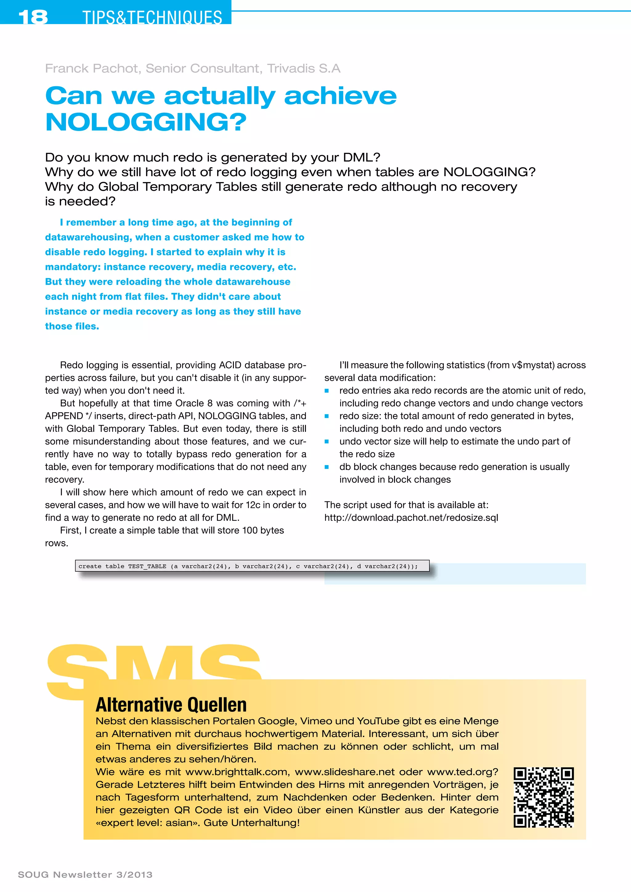
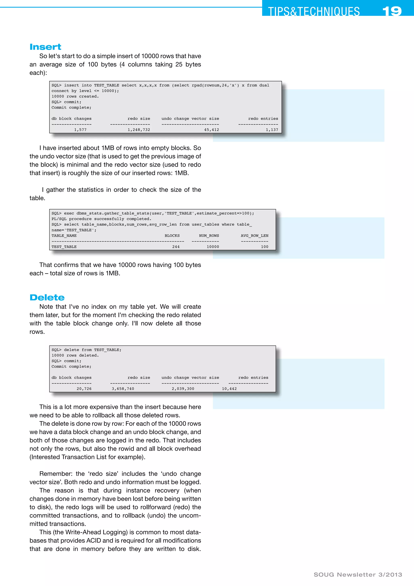
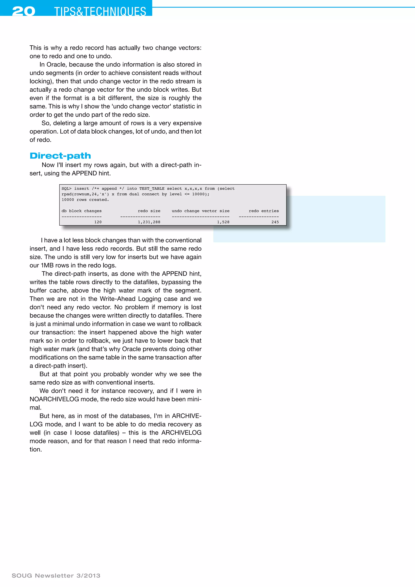
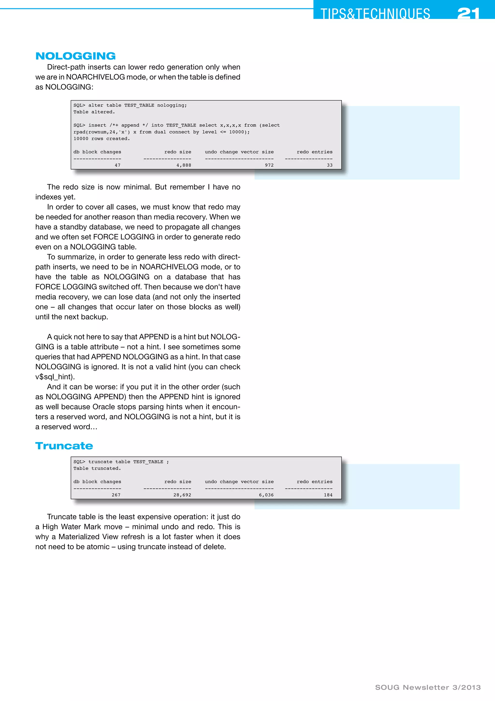
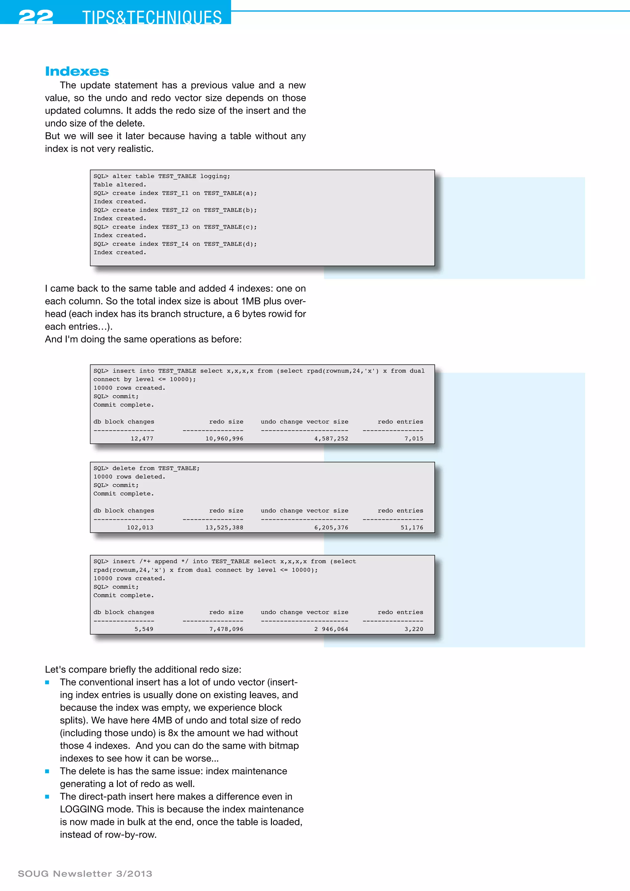
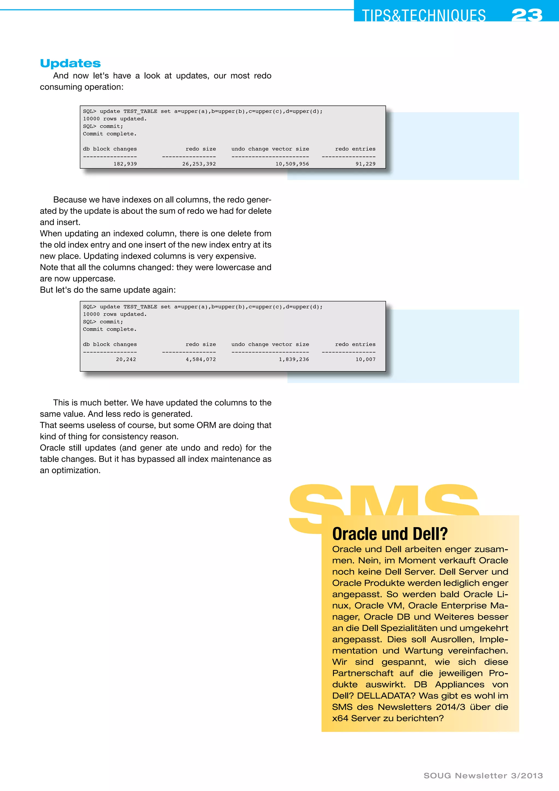
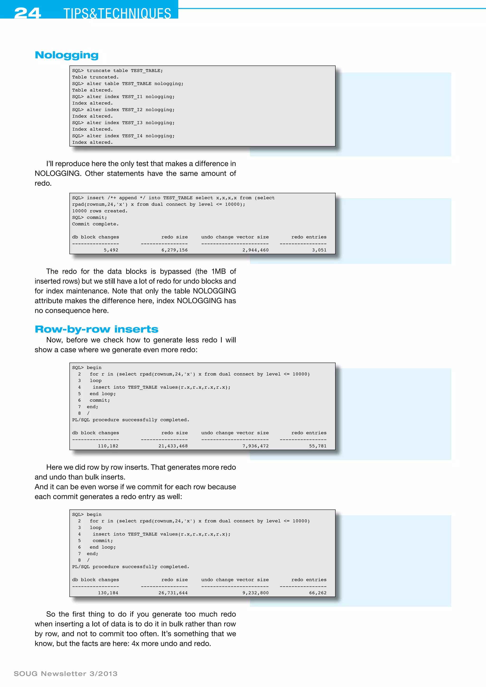
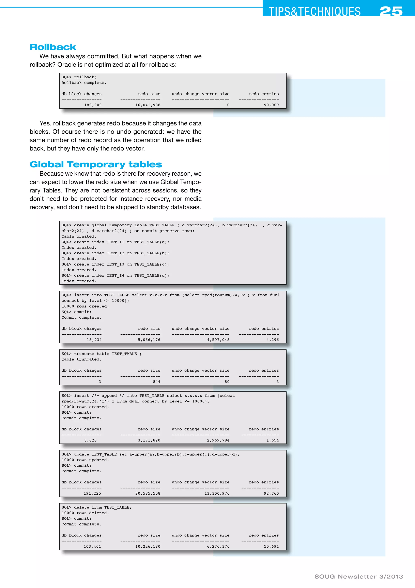
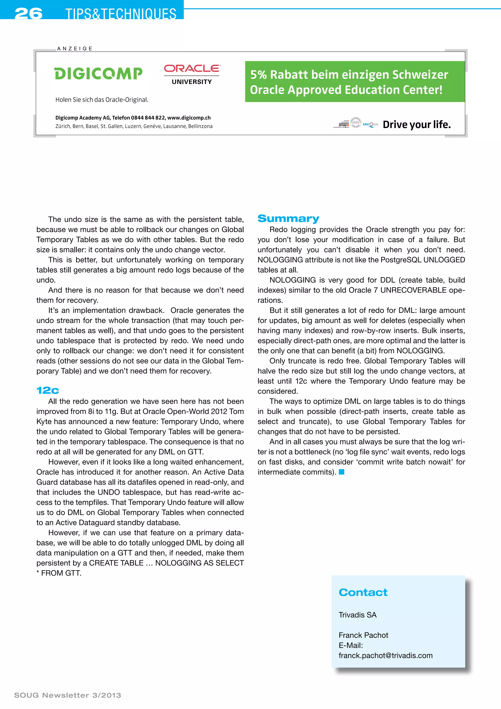

SOUG Newsletter 3/2013 · Franck Pachot
A nine-page measured comparison of redo and undo generated by conventional and direct-path inserts, deletes, updates, truncates, indexed DML, row-by-row processing, rollback, temporary tables, and NOLOGGING. The examples separate data-block logging from unavoidable undo, index, and metadata redo.








